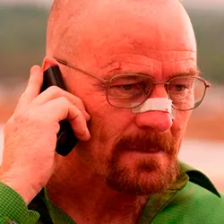
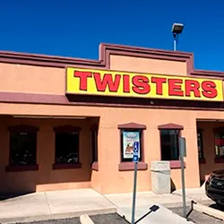

Categorías
Aquí encontrarás multitud de datos interesantes sobre la serie, como personajes principales, secundarios, lugares reales donde se rodarón algunas de las más míticas escenas de la serie, así como curiosidades sobre el rodaje o premios que ha ganado la serie.
Categorías
Search
- Walter White
-  Bryan Cranston fue Walter White en 'Breaking Bad' solo porque otro famoso actor no tuvo mucho ojo
- Breaking Bad' llegó a ser la joya que es gracias a que la huelga de guionistas cambió todos sus planes
- Jesse Pinkman
- Hank Schrader
- Golden GLobe Breaking Bad
-
 5 premios Emmy en 2014, incluyendo mejor serie dramática
5 premios Emmy en 2014, incluyendo mejor serie dramática
-  Los Pollos Hermanos en realidad se llama Twister y esta situado en Albuquerque
- Casa real de Walter White en el 3828 Piermont Dr NE de Albuquerque